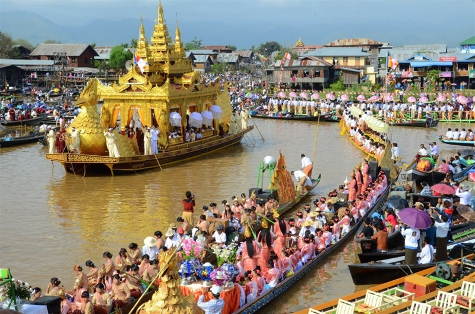

At the center is an ornate shrine with a pedestal, on which the five more than 800 years old images of the Buddha are kept. So much gold leaf has been applied to the images, that they have become unrecognizable as Buddha images and look like a solid mass of gold. Every day Buddhist devotees come to the monastery to pay their respect to the images and apply more gold leaf, which only men are allowed to do. The images are believed to have been brought to the Inle Lake region by Alaungsithu, King of the Bagan empire in the 12th century. The King was a devout Buddhist, who travelled extensively around his empire and had many Buddhist monuments built across his Kingdom, the most impressive one being the Thatbyinnyu temple in BaganAt the center is an ornate shrine with a pedestal, on which the five more than 800 years old images of the Buddha are kept. So much gold leaf has been applied to the images, that they have become unrecognizable as Buddha images and look like a solid mass of gold. Every day Buddhist devotees come to the monastery to pay their respect to the images and apply more gold leaf, which only men are allowed to do. The images are believed to have been brought to the Inle Lake region by Alaungsithu, King of the Bagan empire in the 12th century. The King was a devout Buddhist, who travelled extensively around his empire and had many Buddhist monuments built across his Kingdom, the most impressive one being the Thatbyinnyu temple in Bagan
Set in and around the stilted villages of Inle Lake the Phaung Daw Oo Pagoda Festival is one of the largest Buddhist festivals in Myanmar. The festival is held from the first day of the waxing moon to the third day after the full moon of Thadingyut: September and October in our Western calendar.This annual festival is the biggest and most important event in Shan State. The Phaung Daw Oo Kyaung Pagoda is one of the holiest sites for the Shan people.Pilgrims from all over the country come to this festival to pay homage to the four Buddha images and gain merit whilst enjoying the festive air of the event.
